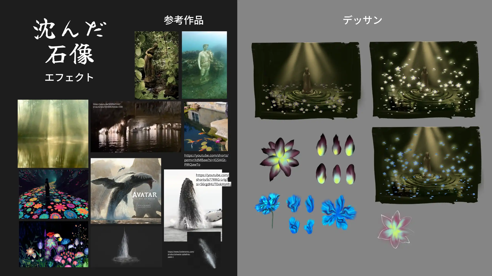
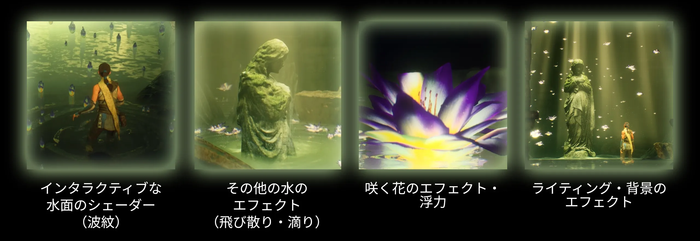

2025年11月
Unreal Engine, 3Ds Max, Liquigen, Substance Designer
担当箇所 私はエフェクト・シェーダーを制作し、カメラワークを工夫しました。背景を多く変更しました。キャラクタアニメーションも調整しました。
利用したアッセット 石像モデル・背景・キャラクター・キャラクターアニメーションは他のアーティストのアッセットです：

「沈んだ石像」はイベントシーンで使えるリアルタイム向けエフェクトです。 4つの要素を強調したいと思います：

UnrealのSingle Layer Waterシェーディングモデルを使わずに水面のシェーダー制作に挑戦しました。 透明シェーディングモデルに基づき制作しました。
リアルタイムの波紋生成は下記の通りです：
１．プレーヤー・アクタの動作を記録。ブループリントコンポーネントが波発生源の情報をナイアガラグリッド２Dシステムに渡します。そして、HLSLでその情報を解釈し、指定した「位置のテクスチャ」を塗ります。
２．「位置のテクスチャ」に基づき、Convolution
Kernelを利用し、波紋の動きのシミュレーションを実施します。また、「位置のテクスチャ」に基づき、泡のマスクを作成します。そして、指定した「シミュレーションのテクスチャ」を塗ります。
３．「シミュレーションのテクスチャ」を水面のシェーダーで利用します。法線・屈折・透明度・色などを変化します。
滴りのエフェクトは複数のレイヤーがあります：
１．石像のマテリアルに滴りのノーマルマップ
２．石像を包むメッシュに滴りのシェーダー
３．じっくり位置した水のフィードバックと水滴
４．水面上の飛び散り
水面の距離に基づき、エフェクトの透明度が変わり、エミッタを有効/無効にします。
それで、石像が水面から出てきた所しかエフェクトが見えません。
咲く花のエフェクトは、数百のアッセットに使用可能な最適化されたエフェクトです。 それで、咲くアニメーションは１つのRotate About Axisノードを利用し、動かしました。 リアルな丸まった動きにするために、数学のトリックで計算した数値をそのノードに入力しました。
花は適切な魔法感を与えるために、手描きのテクスチャを制作しました。花を3DS Maxでモデリングしました。
花の浮力を発生させるために、「シミュレーションのテクスチャ」に基づいた法線（ノーマルマップ）を利用しました。 そのノーマルマップは花を動かすための向き（ベクトル）があります。
ポートフォリオ制作過程